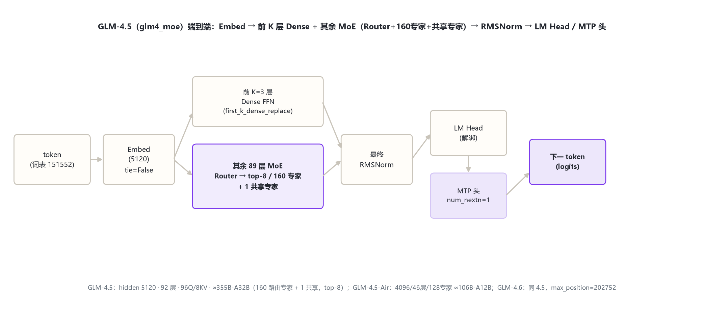
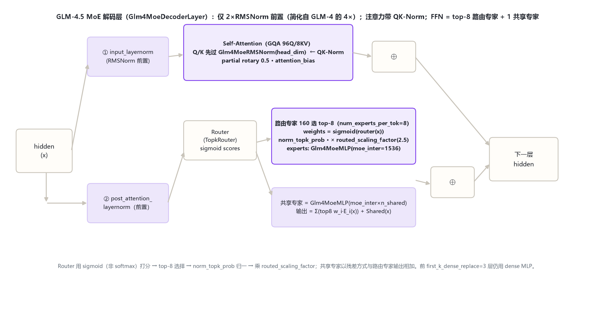

本页以 官方 config（2026-10-31 hf-mirror 留档 _tools/_cfgpull/）与 transformers 源码 models\glm4_moe\ 为唯一依据。关键事实：GLM-4.5 是 glm4_moe 架构的 355B-A32B 稀疏 MoE，不是 dense 32B——以 config 的专家字段为准。
| 字段 | GLM-4.5 | GLM-4.5-Air | GLM-4.6 |
|---|---|---|---|
| model_type / 形态 | glm4_moe（MoE） | glm4_moe（MoE） | glm4_moe（MoE） |
| hidden_size | 5120 | 4096 | 5120 |
| num_hidden_layers | 92 | 46 | 92 |
| Q / KV 头 | 96 / 8 | 96 / 8 | 96 / 8 |
| intermediate_size（dense） | 12288 | 10944 | 12288 |
| moe_intermediate_size | 1536 | 1408 | 1536 |
| n_routed_experts | 160 | 128 | 160 |
| n_shared_experts / top-k | 1 / 8 | 1 / 8 | 1 / 8 |
| first_k_dense_replace | 3 | 1 | 3 |
| routed_scaling_factor | 2.5 | 1.0 | 2.5 |
| use_qk_norm | true | false | true |
| rope_theta / max_position | 1e6 / 131072 | 1e6 / 131072 | 1e6 / 202752 |
| MTP（num_nextn） | 1 | 1 | 1 |
| 激活参数（官方口径） | ≈32B/token | ≈12B/token | ≈32B/token |
GLM-4.6 与 4.5 config 逐项相同，唯一差异 max_position 202752 vs 131072；Air 是窄版（hidden 4096/46层/128专家/use_qk_norm=false/scaling 1.0）。
token → Embed（5120，不绑定 LM Head）→ 前 K 层 dense FFN + 其余 MoE 层（GQA 注意力[QK-Norm] + Router 路由 top-8 专家并叠加共享专家）→ 最终 RMSNorm → LM Head；另有 MTP 头。

Glm4MoeDecoderLayer（modeling_glm4_moe.py:394-438）相对 GLM-4 的 4×RMSNorm 双残差简化为 2×RMSNorm 前置；first_k_dense_replace 之前用 dense MLP，之后用 MoE（:401-404）。

TopkRouter（:268）用 sigmoid 打分（:284），选 top-k（:300-305），norm_topk_prob 归一（:302-304），乘 routed_scaling_factor（:305）。
Glm4MoeMoE（:370）：路由分支 = top-k 专家加权和；共享专家 Glm4MoeMLP(moe_inter×n_shared)（:380-381）全 token 激活，与路由分支残差相加（:384-390）。
注意力内对 Q、K 各加 Glm4MoeRMSNorm(head_dim)（use_qk_norm 分支 :198-201，应用 :218-220），稳定长上下文。Air 的 use_qk_norm=false。
num_nextn_predict_layers=1：除主 LM Head 外附一个浅层 MTP 模块预测下一-下一 token，提升训练密度与推理 speculation。
与 GLM-4 共享 GQA + partial rotary 血统：96 Q 头 / 8 KV 头（12:1）、head_dim 128、partial_rotary_factor 0.5、attention_bias=true；新增 QK-Norm 与 rope_theta=1e6（配合 128K+ 上下文）。GQA/partial rotary 原理见 glm_4/index.md §5。
| token | ID | 含义 |
|---|---|---|
| pad / eos | 151329 / [151329,151336,151338] | 填充 / 结束 |
| vocab_size | 151552 | 词表（GLM 系沿用） |
GLM-4.5 文本代不新增特殊 token；MTP 头不引入新 token。视觉变体 GLM-4.5V 扩展 video/image token，折入 §8 提及。
| 维度 | GLM-4 Dense | GLM-4.5 MoE | GLM-4.6 | GLM-4.5V |
|---|---|---|---|---|
| 形态 | Dense | MoE 160 专家 top-8 | 同 4.5 | MoE + 视觉 |
| hidden/层数 | 4096·40 / 6144·61 | 5120/92 | 5120/92 | 4096/46 |
| Q/KV | 32·2 / 48·2 | 96·8 | 96·8 | 96·8 |
| 归一化 | 4×RMSNorm | 2×前置+QK-Norm | 同 4.5 | 同 4.5-Air |
| 路由 | 无 | sigmoid top-8+共享 | 同 4.5 | 同 4.5-Air |
| MTP | 无 | 1 | 1 | 1 |
GLM-4.5 主线：Dense→MoE；4×RMSNorm 双残差简化为 2×前置 + QK-Norm；新增 MTP；词表 151552、partial rotary 0.5 沿用。GLM-4.5V（glm4v_moe）文本塔=4.5-Air + 新视觉塔（24层/1536/336/merge2，支持视频）。
[S:n]=modeling_glm4_moe.py 行号；「≈32B/≈12B 激活参数」为官方 card 口径。核验日期：2026-10-31。